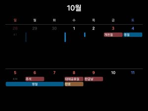

상세 일정
- 4일: 친가로 7시 출발, 15시 도착
- 5일: 일정 없음
- 6일: 제사 및 봉안당 방문, 외가로 13시 출발, 19시 도착
- 7일: 일정 없음
- 8일: 집으로 11시 출발, 18시 도착
김수련의 2025년도 추석 연휴
10월 4일 토요일 ~ 10월 8일 수요일
고창군에 있는 시골 마을이다. 한적하고 주변에는 논밭이 넓게 펼쳐져 있다. 또 바로 옆에 갯벌이 있어 선선하고 바다 내음도 느낄 수 있다.
도착했을 때는 먼저 할머니와 큰아버지께 인사를 드리고 저녁을 먹고 쉬었다. 다음날에는 둘째 큰아버지네 가족들과 고모네 가족들이 차례차례 오셔서 인사를 드렸다. 친가에 머무르는 마지막 날엔 아침 일찍 제사를 지내고 봉안당에 방문해서 할아버지께 인사를 드렸다.
부산 수영구에 외가가 있다. 조금만 걸어서 이동하면 광안리해수욕장이 있다. 밤에 이곳에 방문하면 사람이 굉장히 붐빈다. 친가하고는 정반대에 느낌이다.
도착해서 밖에서 회를 먹고 할머니, 할아버지께 인사를 드리고 쉬었다. 다음 날 점심으로 할머니와 물회를 먹고 대형 마트로 장을 보러 갔다. 장을 보고 와서 장 본 것을 정리하는 것을 도와드리고 저녁을 먹었다. 외가에 머무르는 마지막 날에 할머니께서 해주신 아침을 먹고 인사를 드리고 집으로 출발하였다.